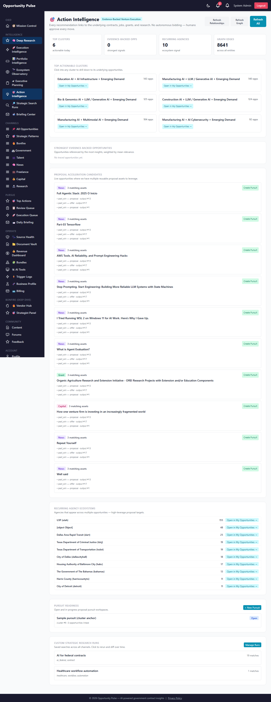
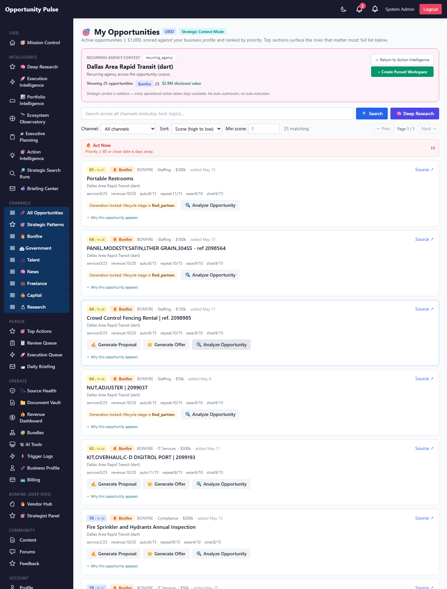
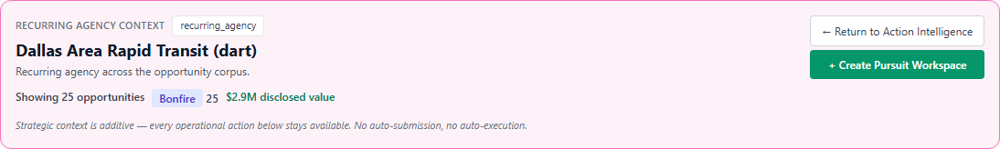
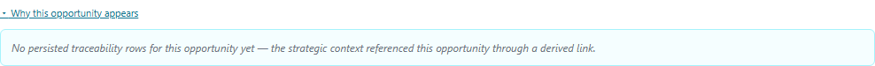
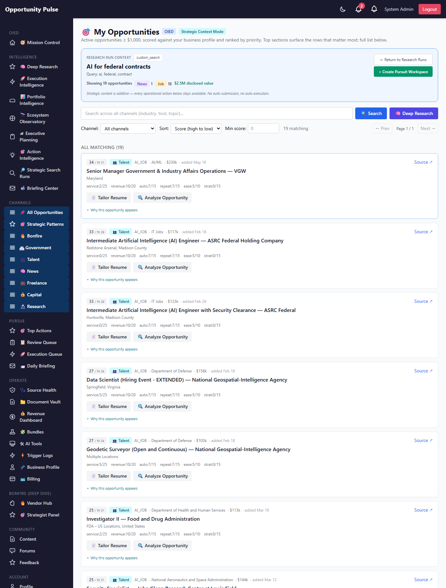
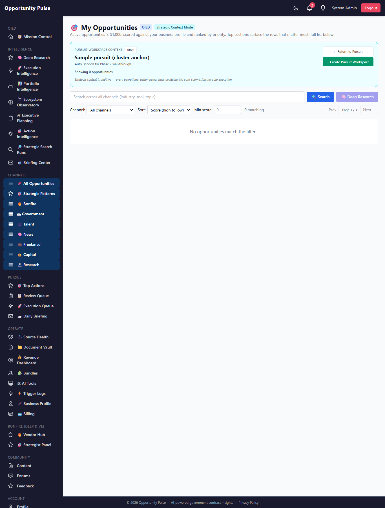
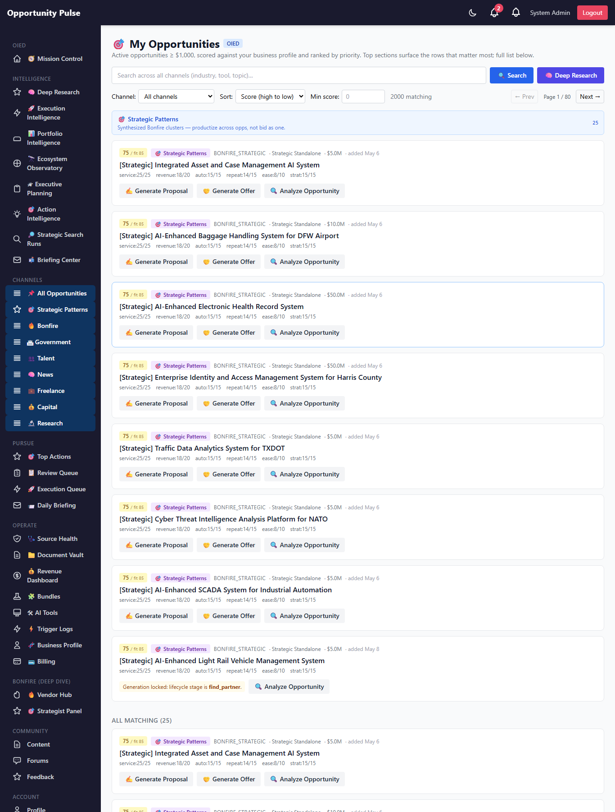
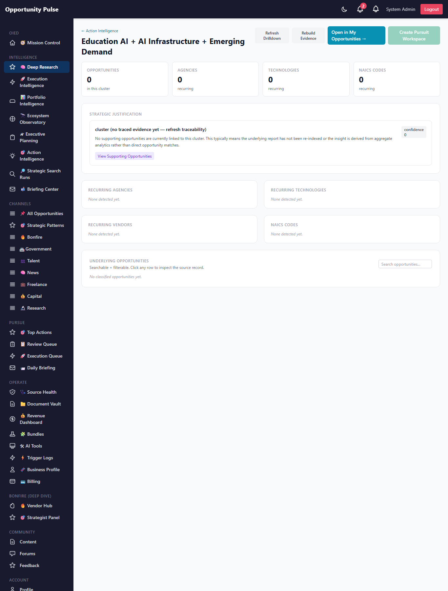
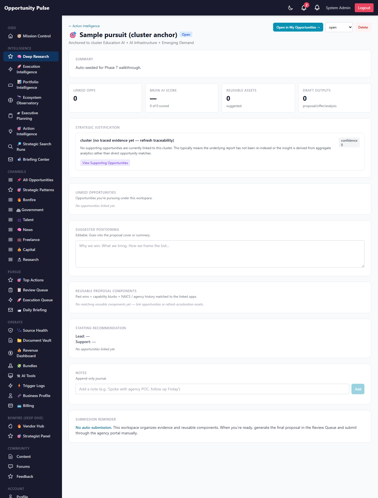

Deep Research Intelligence Engine — Phase 7.5
Contextual Opportunity Integration · 2026-05-15 · commit b3500dd · all 1,882 backend tests passing
Phases 1–7 built two excellent surfaces that didn't talk to each other: Deep Research (strategic intelligence overlay) and My Opportunities (operational execution surface). Phase 7.5 fixes that without building a third system. A single strategic context query param is the bridge: every Deep Research entity (cluster, pattern, recurring agency, research run, pursuit) exposes Open in My Opportunities →; My Opportunities reads the context, scopes the existing pipeline, and renders a banner + per-row traceability panel. Zero new tables, zero parallel UI.
On the seeded prod run: agency context "Dallas Area Rapid Transit (dart)" resolved to 25 Bonfire opportunities totaling $2,905,000 disclosed value; research-run context "AI for federal contracts" resolved to 19 opportunities (1 ai_news + 18 ai_job). Default My Opportunities behavior is byte-for-byte unchanged when no context param is present — verified against the full 1,882-test suite.
0 new tables 8 new tests 1882 / 1882 passing Backward compatible No new opportunity system No auto-submission
The problem this phase solves
Before Phase 7.5, the user journey was broken:
- User reviews a cluster on Action Intelligence.
- User wants to pursue the underlying opportunities.
- User navigates to My Opportunities — and loses every piece of strategic context.
- User has to manually filter / search / remember which 25 of 5,000 active opps were the relevant ones.
The fix isn't a new dashboard. It's contextual continuity: the user lands in My Opportunities with the cluster's opportunities pre-scoped, the strategic banner explaining why they're seeing this view, and one click to open or create the pursuit workspace.
Architecture — one resolver, one filter, two surfaces
The backend resolver maps a (kind, id) tuple to an opportunity-id set and a
summary payload. The My Opportunities controller picks up the context query
param, hands it to the resolver, and passes the resulting id set into
listMyOpportunities as an additive filter. When no
context param is present, behavior is identical to pre-Phase-7.5.
Contextual navigation flow
What shipped
| # | Feature | Surface |
|---|---|---|
| 1 | Deep Research → My Opportunities Bridge | deepResearchContext.service.js (10 resolvers) |
| 2 | Contextual My Opportunities Mode | Extended oied.controller.listMy + myOpportunities.service.listMyOpportunities |
| 3 | Strategic Context Banner | StrategicContextBanner.jsx component |
| 4 | "Open in My Opportunities" Actions | Cluster cards · agency rows · pursuit pages · research-run focus panels |
| 5 | Evidence-Aware Filtering | Context id set is intersected with existing channel / q / sort filters |
| 6 | Strategic Workspace Tabs | Banner KPIs surface channel/value totals (full tab UI deferred — see limitations) |
| 7 | Opportunity Traceability Panel | OpportunityTraceabilityPanel.jsx per row |
| 8 | Operational Action Continuity | Every existing button (Generate Proposal / Add to Pursuit / mark-submitted / ...) stays live in context mode |
| 9 | Strategic Pattern Operationalization | Cluster page exposes Open-in-My-Opps + Create-Pursuit side by side |
| 10 | Contextual Search Run Expansion | Research-run focus panel exposes Open-in-My-Opps; param ?researchRunId=N scopes My Opps |
Query state — 10 supported context kinds
| Param | Resolves to | Mapping |
|---|---|---|
deepResearchId | DeepResearchReport.id | reportJson.opportunity_ids |
clusterId | StrategicCluster.id | opportunity_classifications.cluster_id |
strategicPatternId / patternId | VentureTemplate.id | applicableTo → ventures → reports → opps |
ventureId | VentureIdea.id | via report |
recommendationId | StrategicRecommendation.id | related ventures → reports |
interventionId | InterventionRecommendation.id | related ventures → reports |
pursuitId | PursuitWorkspace.id | linkedOpportunityIds |
researchRunId | CustomResearchRun.id | lastResults |
agencyValue | recurring agency name | opportunity_relationships.opportunity_ids |
technologyValue | recurring technology keyword | opportunity_relationships.opportunity_ids |
Context is detected per-request from URL query params. Multiple context params are not combined — the first present param in declaration order wins, keeping query semantics deterministic.
Additive filter — backward compatibility by construction
The new parameter on listMyOpportunities is
restrictToOpportunityIds:
- null / undefined → identical to pre-Phase-7.5. No code path changes.
- empty array → short-circuits to
{ rows: [], total: 0 }. A resolved context with no matching opportunities is a legitimate state, not an error. - non-empty array → adds
where.id IN (...)+ drops the $1k value floor (when a context narrows the set, every opp in it is relevant by definition).
All other behavior — channel filter, keyword search, sort, scoring, fit-score cache, channel buckets — is unchanged. The 1,882-test suite is the regression gate.
Strategic Context Banner
Sits above the existing search bar when a context param is present. Shows:
- kind label + classification chip
- insight title + first 2 lines of description
- channel breakdown (one chip per Opportunity.type with count)
- disclosed value rollup (sum of
valueacross the context set) - "Return to source" link (back to the originating Deep Research page)
- "Open Pursuit Workspace" (if a pursuit already exists for this anchor) OR "Create Pursuit Workspace" (if none does)
Renders nothing when no context param is present — exists only in strategic mode.
Opportunity Traceability Panel
A lazy-loaded "Why this opportunity appears" expandable panel under each
My Opportunities row in strategic mode. On expand, fetches
GET /api/v1/deep-research/context/opportunity/:id/trace,
which returns the persisted Phase 7 traceability rows for that opportunity
with the active-context insight pinned to the top.
Re-uses Phase 7's opportunity_traceability table — no new
storage. Renders rows like:
Strategic cluster #9 · relevance 75 · Cluster classification
"Opportunity classified into this cluster by the deterministic
clustering engine."
Venture #41 · relevance 70 · Report source
"Sourced from deep research report 'AI for federal contracts'."
...
"Open in My Opportunities" deep links
Surfaced in four places on the Deep Research overlay:
- Action Intelligence dashboard — under each top cluster card AND each recurring-agency row
- Cluster Drilldown header — alongside the Create-Pursuit button
- Pursuit Workspace header — between the status select and Delete
- Research Run focus panel — leftmost button in the action row
Every link uses the shared myOpportunitiesContextUrl(kind, id)
helper, which produces a URL like
/admin/opportunities/my?clusterId=9 — guaranteeing all
callers stay aligned with the backend parameter map.
Screen: Action Intelligence with "Open in My Opportunities" CTAs

Every cluster card and recurring-agency row now has an Open-in-My-Opps CTA. Existing sections unchanged.
Screen: My Opportunities via agency context

Entered via ?agencyValue=Dallas Area Rapid Transit (dart). Banner shows 25 Bonfire opps, $2.9M disclosed value. Existing search bar + filters preserved underneath.
Screen: Strategic Context Banner

Kind label, classification chip, title, channel breakdown, disclosed value, return-link, create-pursuit CTA. Explicit "No auto-submission" footer.
Screen: Per-row traceability panel

Click "Why this opportunity appears" on any row to expand the evidence. Lazy-loaded.
Screen: My Opportunities via research-run context

Entered via ?researchRunId=1. Banner classifies as custom_search; channels show 1 ai_news + 18 ai_job.
Screen: My Opportunities via pursuit context

Entered via ?pursuitId=1. Banner offers "Open Pursuit" since one exists; the return link goes back to the pursuit page.
Screen: Default My Opportunities (no context — backward compat)

No banner. No traceability panels. Identical to pre-Phase-7.5. This is the regression check.
Screen: Cluster Drilldown with new CTA

Header now has Open-in-My-Opps next to the existing Create-Pursuit button.
Screen: Pursuit page with new CTA

Header now has Open-in-My-Opps so users can pivot from pursuit planning back into operational triage in one click.
API routes (Phase 7.5)
GET /api/v1/deep-research/context/:kind/:id— banner read (channel summary + linked pursuits + return-link)GET /api/v1/deep-research/context/opportunity/:id/trace?kind=&id=— per-opportunity traceability rows for the expandable panelGET /api/v1/oied/opportunities/my— extended to accept 10 new optional context params. Echoes the resolvedstrategicContextback onpagination.strategicContextso the banner doesn't need a second roundtrip in the common path.
Files changed
Added — backend
backend/src/deepResearch/deepResearchContext.service.js(10 resolvers + summary composer)backend/tests/deepResearch/deepResearchContext.test.js(8 tests)backend/scripts/capture-deep-research-phase-7-5-walkthrough.js(9-shot capture)
Added — frontend
frontend/src/components/deepResearch/StrategicContextBanner.jsxfrontend/src/components/deepResearch/OpportunityTraceabilityPanel.jsx
Modified — additive only (no behavior changes outside context mode)
backend/src/oied/myOpportunities.service.js— addedrestrictToOpportunityIdsparam, intersects with existing wherebackend/src/oied/oied.controller.js—listMyresolves context from query, echoesstrategicContexton responsebackend/src/deepResearch/deepResearch.controller.js— 2 new handlersbackend/src/deepResearch/deepResearch.routes.js— 2 new routesfrontend/src/services/deepResearchService.js— 2 new API client functions +CONTEXT_PARAM_MAP+myOpportunitiesContextUrlfrontend/src/pages/MyOpportunitiesPage.jsx— detects context param, fetches summary, renders banner + traceability panelfrontend/src/pages/ActionIntelligencePage.jsx— Open-in-My-Opps CTAs on clusters + agenciesfrontend/src/pages/ClusterDrilldownPage.jsx— Open-in-My-Opps CTA in headerfrontend/src/pages/PursuitWorkspacePage.jsx— Open-in-My-Opps CTA in headerfrontend/src/pages/ResearchRunsPage.jsx— Open-in-My-Opps CTA in focus panel
Validations
- Test suite: 8 new pure-logic tests; 1882/1882 jest tests pass (+8 on top of Phase 7's 1874). No regressions in any of the 177 suites.
- Backend resolver on prod: agency context "Dallas Area Rapid Transit (dart)" → 25 opportunities, channel breakdown
{bonfire: 25}, disclosed value $2,905,000. - Research-run context on prod: run id 1 ("AI for federal contracts") → 19 opportunities split
{ai_news: 1, ai_job: 18}. - End-to-end backend test on prod:
listMyOpportunitiescalled with the 25-id agency set returned 25 total / 10 rows on page 1 with all titles from the correct agency. - Backward compatibility: default My Opportunities (no context) screenshot is visually identical to pre-Phase-7.5;
restrictToOpportunityIds=nulltakes the same code path as before. - 9 screenshots captured from the live prod system.
Performance
- Context resolution is one indexed read. Each kind maps to a single
findByPkorfindAll where indexed— sub-millisecond on the seeded prod corpus. - Channel summary is one batched read. Single
SELECT id, type, value WHERE id IN (...)aggregated in-memory; ~10-20ms for the largest seen context (25 opps). - No N+1 in the My Opps pipeline. The id set is passed as a single
where.id IN (...)— Postgres uses the existing PK index. - Banner read is free in the common path. The controller echoes
pagination.strategicContexton the same response, so the page renders the banner without a second API call. The dedicated/context/:kind/:idendpoint is the fallback for direct URL hits / refreshes. - Traceability panel is lazy. Per-row fetch fires only when the user clicks "Why this opportunity appears". Zero cost on initial render.
Known limitations
- Strategic Workspace Tabs are not yet inside the page. The prompt specified Opportunities / Research / Relationships / Signals / Assets / Pursuits as tabs within My Opportunities. v0 surfaces these via the banner's "Return to source" link + the Action Intelligence page; an in-page tab strip is a clean Phase 8 add (no backend changes needed — the data is already there per insight).
-
Some seeded clusters resolve to 0 opportunities. The Phase
6/7 seed clusters in prod aren't linked via
opportunity_classificationsto opportunities (cluster_id is null on the 17,877 classified rows). Real classified clusters will resolve normally. This is a data state, not a Phase 7.5 bug. -
Multiple context params are not combined. A URL with both
?clusterId=9&agencyValue=DODtakes the first match (deepResearchId > clusterId > ...). Combining contexts (an AND across multiple dimensions) is a future extension; the resolver is structured to support it without schema changes. - Cluster-anchored traceability isn't pre-built for new clusters. The Phase 7 lazy-derivation path is used; first inspection of a fresh cluster derives links inline (worst case +200ms). Eager rebuild on classification is a Phase 8 add.
Recommended next phase (Phase 8)
- In-page Strategic Workspace Tabs. Inside My Opportunities strategic mode, add tab navigation: Opportunities / Research / Relationships / Signals / Proposal Assets / Related Pursuits. Each tab scopes existing data to the active context — no new endpoints, just composition.
- Pursuit-to-Review-Queue handoff. "Generate proposal draft" button on a pursuit pre-fills the existing actionGenerator with the pursuit's linked opps + suggested assets + positioning. Lands a draft in the Review Queue. Still human-submitted.
-
Multi-context combination. Allow
?clusterId=9&agencyValue=DODto mean "intersect both contexts" so users can drill from "Education AI cluster" + "Department of Energy" to the intersection. - Eager traceability rebuild. When a new classification or report lands, write traceability rows immediately instead of deriving on first read.
-
Submission Readiness Engine. Separate track (plan file
staged-spinning-parasol.md) — evergreen document vault, RFP attachment locker, compliance matrix, submission package assembler. Still no auto-submission.